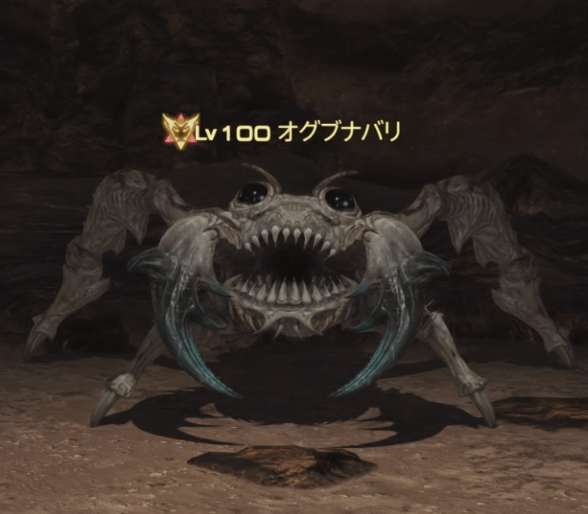
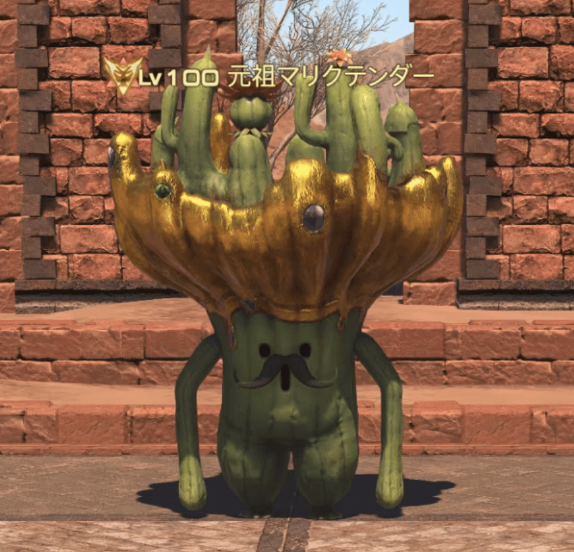
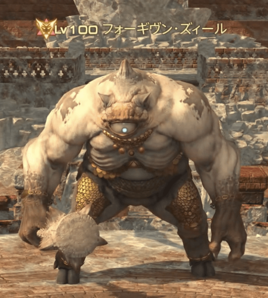
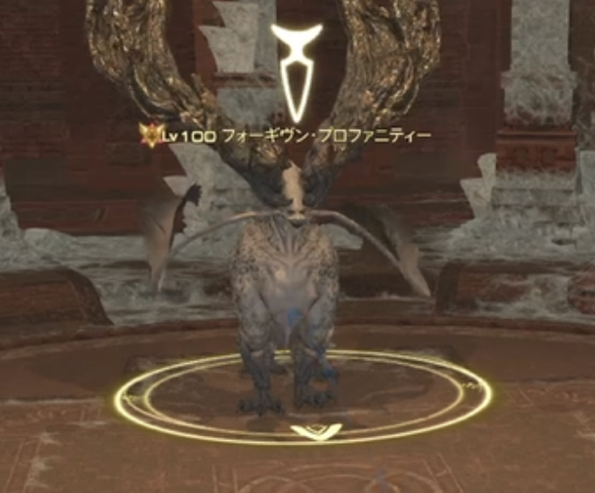
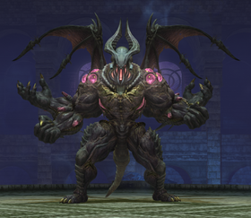

F50
オグブナバリ

危険技
- 砂地の弱体
- 追尾円範囲
- 竜巻の吹き飛ばし
- 強攻撃
見るところ
砂地、竜巻、追尾円の3つ。床を踏むタイミングを先に決める。
避け方
砂地に乗って弱体を消す。竜巻は砂地へ入り、吹き飛ばしを無効化する。追尾中は火力より移動を優先。
事故りやすい所
砂地解除を忘れる、竜巻を素受けする、追尾中に攻撃を欲張る。

砂地、竜巻、追尾円の3つ。床を踏むタイミングを先に決める。
砂地に乗って弱体を消す。竜巻は砂地へ入り、吹き飛ばしを無効化する。追尾中は火力より移動を優先。
砂地解除を忘れる、竜巻を素受けする、追尾中に攻撃を欲張る。

複数のサボテンを召喚し、時計回りか反時計回りに進んだ場所から範囲攻撃を放つ。一進なら1マス、二進なら2マス進む。
詠唱完了でプレイヤーはバインドされて止まる。
範囲が当たらない外周の安地を先読みする。どちらにしても外周のどこかが安地になる。迷ったら戦闘不能を避けるため、最悪1枚踏みで済む場所を選ぶ。
ニードルシュートを回転しながら撃ってくる。回転がかなり早いので、なるべく足を止めずに安地へ移動し続ける。遅れたと思ったら即スプリント。
進むマス数を逆に読む、バインド後に動けるつもりで位置決めする、中央で複数枚踏む、スピンで立ち止まる。

レーザーの向き、白玉の出現順、8連扇の1発目と5発目を覚える。
レーザーは横へ。白玉は先に爆発した場所へ入り直す。扇は次に空く方向へ小さく動く。
被弾が重い。端に寄りすぎると白玉順と扇方向が見づらくなる。

髭の向き、内外円、雷玉の線、弱体中の移動量を順番に確認する。
内外を見て位置調整。雷玉の線を踏まない。動きすぎ禁止中は必要最低限だけ動き、次の半面攻撃で解除する。
弱体中に動きすぎる、雷線を踏む、解除前に次の半面を見落とす。

光る手、前後か左右か、外周円の位置を見る。技名の「背」だけで判断しない。
旋背撃は光っていない手側へ。縦横断衝はボス範囲と外周直線の両方に当たらないマスへ入る。
外周円の直線を忘れる、吹き飛ばしで外へ寄りすぎる、光る手の見間違い。
自分の床とボス色、2体のHP差、火球の数、吸収詠唱の速い方を確認する。
光床では闇ボス、闇床では光ボスに対応。火球2個は止まる、4個は動く。エーテル吸収は詠唱が速い方から正しい床を踏む。
HP差を広げすぎる、範囲誘導で窓を壊す、床踏み順を逆にする、落下する。